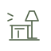
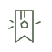
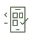
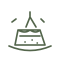
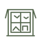

30 件小事 · 专属图标目录WB-001给自己做一杯特调
把冰箱里的水果加进气泡水。
WB-002读完薄薄的一章书
找个舒服的角落，只读一章。

WB-003给房间换个小角落
挪一盏灯，或给桌面留点空白。
WB-004写一封不必寄出的信
写给未来的自己，或想念的人。
WB-005用三首歌的时间发呆
让脑袋也过一个小周末。
WB-006做一道没试过的早餐
简单一点，也可以很有仪式感。
WB-007画下窗外的一小块天
不用画得像，记下今天就好。
WB-008给一件旧物拍张肖像
为陪你很久的东西留个纪念。

WB-009用手边材料做张书签
一张包装纸，也能有新工作。
WB-010为喜欢的人列一张歌单
选五首歌，藏进一点心意。
WB-011走一条没走过的小路
在熟悉的街区，拐一个新的弯。
WB-012找一棵树，站着看一会儿
看看叶子，听听风。
WB-013收集三种颜色的天空
早一点、晚一点，都抬头看看。
WB-014在公园坐满十五分钟
让路过的云替你安排时间。
WB-015给街角的小花拍张照
不摘走，只带回一张照片。
WB-016走到附近的一座小桥
看看水，也看看来往的人。
WB-017带一杯水去看日落
今天的落幕，值得亲自到场。
WB-018逛一逛附近的菜市场
找一种从没留意过的食材。
WB-019在户外寻找五种圆形
井盖、车轮，还有什么？
WB-020去一次步行可达的小店
看看橱窗，也可以只逛不买。
WB-021给很久没联系的人问个好
一句“最近怎么样”就够了。
WB-022翻出十张旧照片
挑一张，说说那天的故事。

WB-023整理手机里的二十张截图
给小小的数字角落透口气。
WB-024认真听完一张专辑
放下切歌键，跟着它慢慢走。
WB-025找一本书里的好句子
抄下来，当作今天的签语。
WB-026用五分钟伸展身体
抬抬肩膀，给自己一点松弛。

WB-027用家里食材拼一份小点心
不必采购，看看能变出什么。

WB-028观察十分钟窗外的生活
记住一个平时错过的细节。
WB-029记下本周三个开心瞬间
再小的好事也算数。
WB-030给自己放一场客厅电影
关灯、倒水，今晚正式开场。